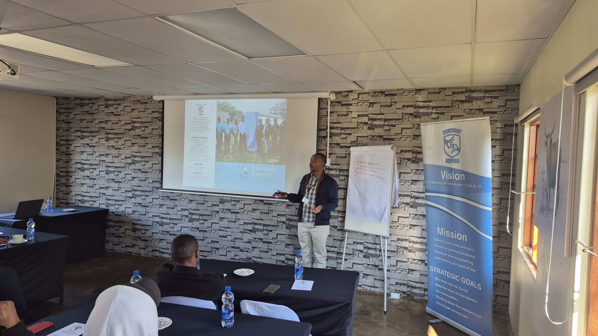
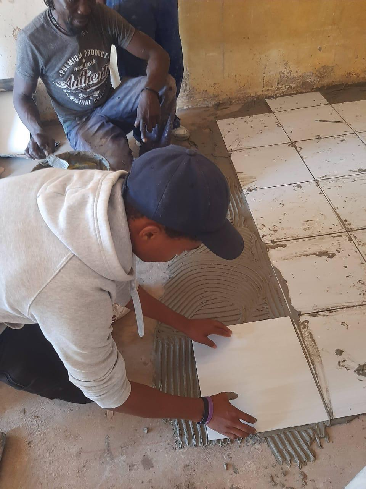
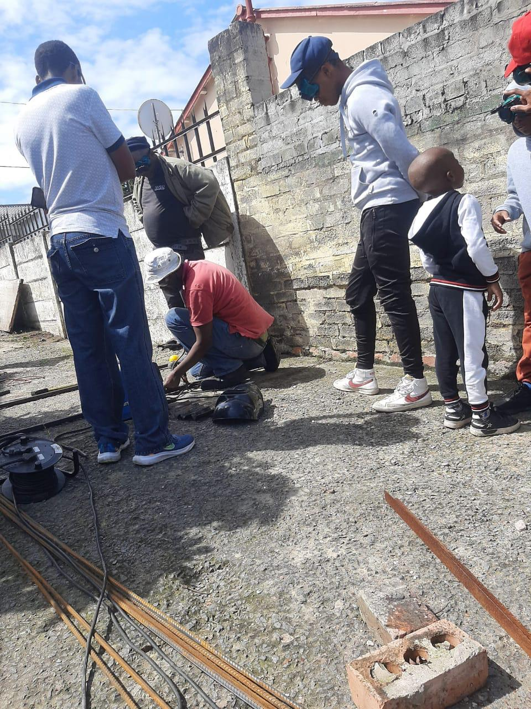
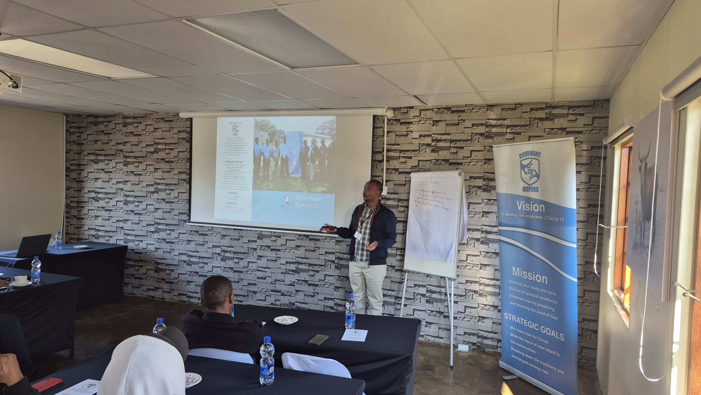
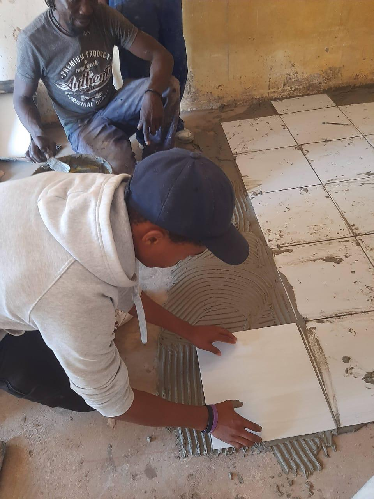
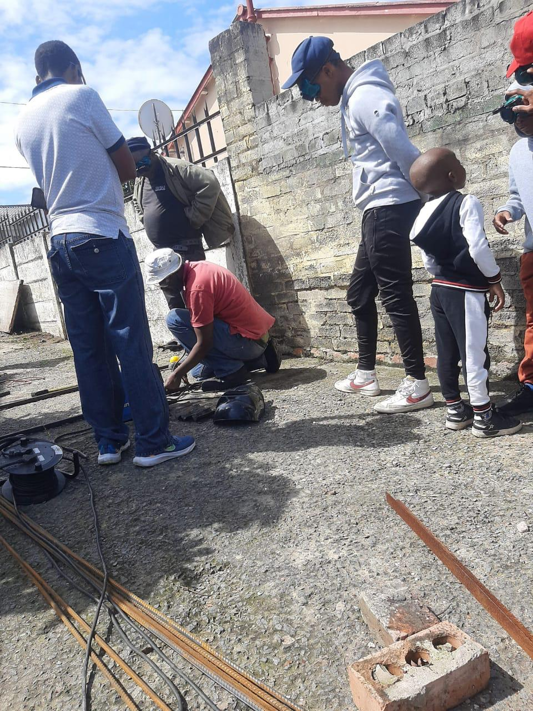

Vision
To empower men with relevant, future-fit skills aligned with economic needs,
fostering productivity and better job prospects.
Description
Focused on entrepreneurship, vocational training, financial literacy, and empowerment initiatives.
Key programs include:
- Skills audits and training within branches.
- Vocational training in trades like carpentry, plumbing, and electrical work
- Hosting Skills Summits in strategic cities, showcasing community skills and needs to government stakeholders.
- Empowerment initiatives such as job placement assistance and small business support